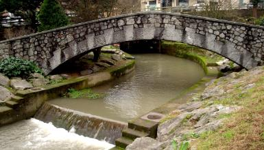
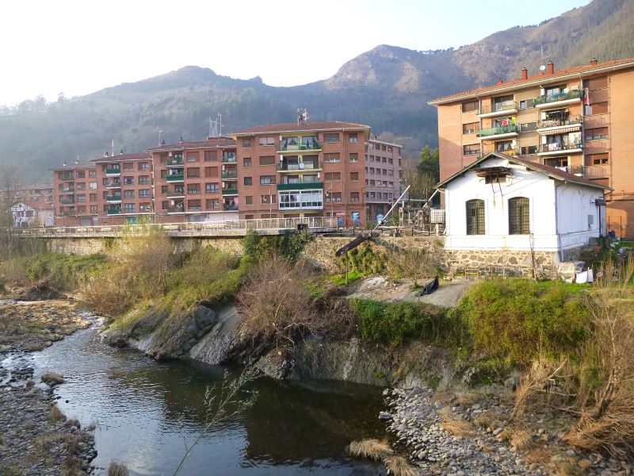
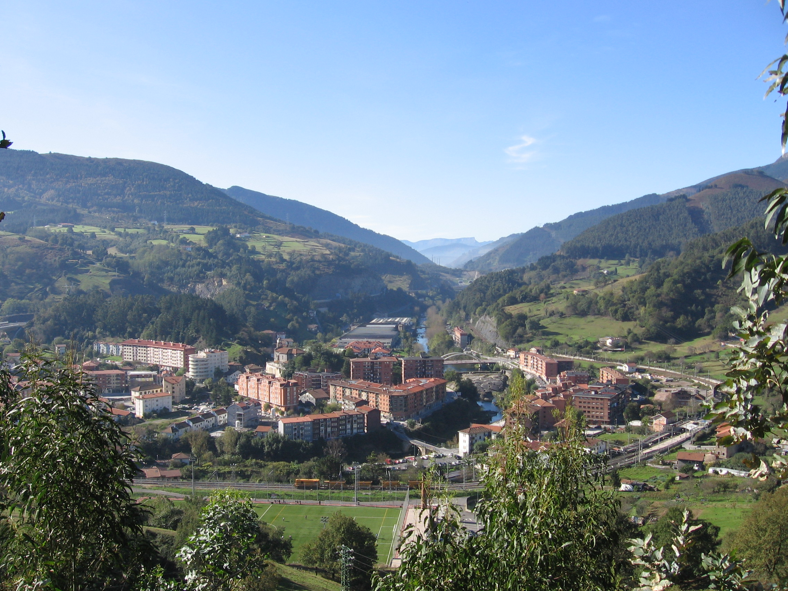
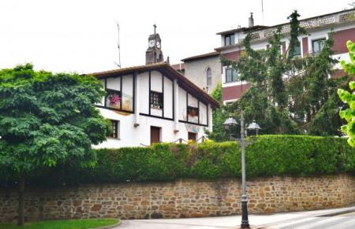
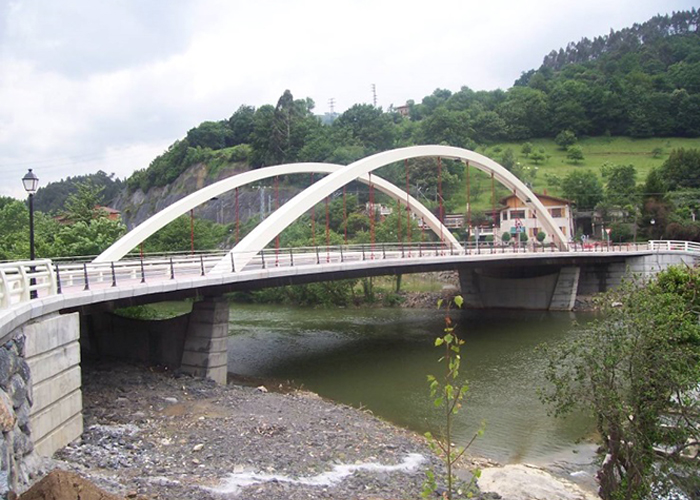

Galería Histórica
Una colección visual que documenta la evolución de Alonsotegi a través del tiempo. Haz clic en cualquier imagen para verla en detalle.

Río Kadagua y urbanización
Vista del cauce del Kadagua con los edificios residenciales al fondo. Se aprecia la convivencia entre el entorno natural y el desarrollo urbano.

Presa histórica
Estructura hidráulica del siglo pasado sobre el Kadagua. Estas infraestructuras fueron fundamentales para la industria local.

Panorámica del valle
Vista panorámica del valle de Alonsotegi con el monte Ganekogorta al fondo. La imagen muestra el carácter rural y montañoso de la zona.

Caserío tradicional
Ejemplo de arquitectura rural vasca. Estos caseríos fueron el núcleo de la vida rural antes de la industrialización.

Puente moderno sobre el Kadagua
El puente contemporáneo conecta las dos orillas del río. En época de crecida, el caudal puede ser impresionante.

Fábrica de cementos Goyarrola
Imagen histórica de la fábrica en su época de máximo esplendor industrial.

Torre de Loizaga
Una de las casas-torre medievales que marcaron los orígenes del pueblo.

Ferrocarril de La Robla
El tren de vía estrecha que fue arteria vital para el transporte de mercancías.

Trabajadores de la fábrica
Grupo de trabajadores a la salida de la fábrica de cementos, años 50.
¿Tienes fotos históricas de Alonsotegi?
Ayúdanos a ampliar esta galería compartiendo tus fotografías antiguas del pueblo.
Colabora con nosotros